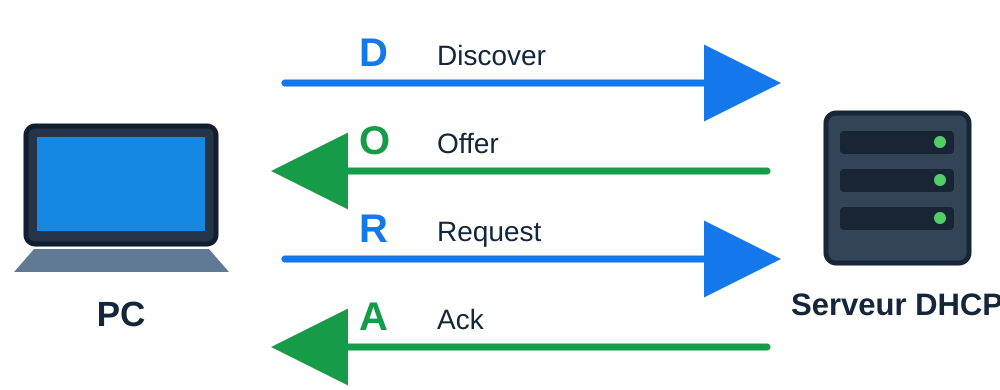

1. À quoi sert le DHCP ?
Un serveur DHCP permet à un appareil d'obtenir automatiquement sa configuration réseau, notamment une adresse IPv4, un masque de sous-réseau et un bail (durée pendant laquelle l'adresse lui est attribuée).
Il peut aussi fournir des options DHCP, comme l'adresse de la passerelle et celle des serveurs DNS. D'autres options existent selon les besoins du réseau.
Observer une configuration réelle
Sur un PC Windows, la commande ipconfig /all affiche ces informations. Voici un extrait de la configuration de REN-PC-01 :
C:\Users\chaoli>ipconfig /all
Configuration IP de Windows
Nom de l’hôte . . . . . . . . . . : REN-PC-01
Carte Ethernet Ethernet :
DHCP activé. . . . . . . . . . . : Oui
Configuration automatique activée : Oui
Adresse IPv4. . . . . . . . . . . : 192.168.1.26 (préféré)
Masque de sous-réseau . . . . . . : 255.255.255.0
Bail obtenu. . . . . . . . . . . : dimanche 18 octobre 2026 08:34:38
Bail expirant. . . . . . . . . . : lundi 19 octobre 2026 19:32:52
Passerelle par défaut. . . . . . : 192.168.1.1
Serveur DHCP . . . . . . . . . . : 192.168.1.1
Serveurs DNS. . . . . . . . . . . : 192.168.1.1
8.8.8.8
1.1.1.1Carte Ethernet Ethernet
- Nom de l'hôte
- REN-PC-01
- DHCP activé
- Oui
- Configuration automatique activée
- Oui
- Adresse IPv4
- 192.168.1.26 (préféré)
- Masque de sous-réseau
- 255.255.255.0
- Bail obtenu
- 18/10/2026 à 08:34:38
- Bail expirant
- 19/10/2026 à 19:32:52
- Passerelle par défaut
- 192.168.1.1
- Serveur DHCP
- 192.168.1.1
- Serveurs DNS
- 192.168.1.1
8.8.8.8
1.1.1.1
Comment lire cette configuration ?
- DHCP activé : Oui : le PC est configuré pour demander automatiquement une adresse IP.
- Serveur DHCP : indique quel équipement a attribué la configuration.
- Bail obtenu / Bail expirant : indiquent le début et la fin du bail.
Le bail DHCP : une durée à choisir
Un bail DHCP est une attribution temporaire d'adresse IP. Sa durée se règle sur le serveur DHCP, selon les appareils et leur fréquence de connexion. Le PC peut demander un renouvellement avant l'expiration.
Dans l'exemple ipconfig /all, le bail commence le 18 octobre 2026 à 08:34 et expire le 19 octobre 2026 à 19:32.
Les visiteurs restent peu de temps. Un bail d'environ 1 à 2 heures peut permettre de réutiliser plus rapidement les adresses après leur départ.
Les mêmes ordinateurs se reconnectent régulièrement. Un bail de plusieurs jours peut convenir : inutile d'imposer une durée très courte.
Avec beaucoup de visiteurs, un bail de 30 jours peut être trop long. Des adresses IP restent attribuées après le départ des visiteurs. Le serveur risque alors de manquer d'adresses disponibles.
À quoi servent la passerelle et le DNS ?
La passerelle permet de communiquer avec d'autres réseaux, notamment Internet. Les serveurs DNS permettent de trouver l'adresse IP correspondant à un nom comme www.decathlon.fr.
Une adresse IPv4 correcte ne garantit donc pas l'accès à tous les services : la passerelle et les DNS doivent aussi être correctement configurés.
Je me teste
Utilise la sortie ipconfig /all ci-dessus pour répondre. Cherche les informations comme le ferait un technicien.
2. DORA : les 4 messages du DHCP
Lorsqu'un PC demande une configuration réseau, il échange quatre messages avec le serveur DHCP. Les premières lettres de leurs noms forment le mot DORA.

Je me teste
Choisis une réponse pour chaque situation.
3. Plage, exclusion et réservation
Le serveur DHCP distribue des adresses IPv4 aux appareils du réseau. Trois réglages permettent de décider quelles adresses sont disponibles et à quels appareils les attribuer.
La plage DHCP : les adresses disponibles
La plage DHCP (ou étendue) est l'ensemble des adresses que le serveur peut attribuer aux clients. Dans le réseau 192.168.20.0/24, les adresses des appareils vont de .1 à .254.
Le serveur DHCP, la passerelle et les autres équipements configurés en IP fixe sont de préférence en dehors de la plage distribuée, pour éviter les conflits d'adresses.
L'exclusion : des adresses à ne pas distribuer
Une exclusion interdit au serveur de distribuer une adresse ou un groupe d'adresses situés à l'intérieur de la plage DHCP.
Par exemple, les adresses 192.168.20.180 à 192.168.20.189 peuvent être gardées pour plusieurs équipements configurés en IP fixe. Exclure ne veut pas dire réserver à un appareil : le serveur ne distribue simplement pas ces adresses.
La réservation : toujours la même adresse sur ce site
Avec une réservation DHCP, un appareil reçoit toujours la même adresse IP sur ce réseau. Le serveur DHCP reconnaît l'appareil grâce à son adresse MAC.
Situation professionnelle : le mécanicien utilise sa valise en déplacement, parfois en 5G. À l'atelier, elle se connecte au Wi-Fi et reçoit 192.168.20.60 grâce à sa réservation. Les règles du pare-feu associées à cette adresse peuvent alors s'appliquer. Sur un autre site, elle peut recevoir une autre IP.
À retenir : l'exclusion interdit de distribuer une adresse ; la réservation attribue une adresse précise à un appareil identifié.
Je me teste
Analyse les situations suivantes et choisis le réglage adapté.
4. VLAN et DHCP
Le besoin : dans une entreprise, les PC de plusieurs VLAN doivent obtenir une configuration IP automatiquement. Installer un serveur DHCP dans chaque VLAN multiplierait les équipements et leur administration. Un serveur DHCP central peut gérer plusieurs réseaux.
La difficulté : le premier message DHCP Discover est un broadcast qui reste dans son VLAN. Même si le switch de niveau 3 assure le routage inter-VLAN, il ne transmet pas automatiquement ce broadcast au serveur DHCP distant.
La solution : on configure un relais DHCP (IP Helper) sur l'interface VLAN du switch de niveau 3. Le relais transmet la demande au serveur central, qui dispose d'une étendue d'adresses pour chaque VLAN.
Un serveur DHCP central, à l'adresse fixe 10.99.0.10 dans le VLAN 99, fournit des configurations adaptées à chaque réseau. Le switch L3 relaie les demandes des VLAN 10, 20 et 30.
| VLAN | Réseau | Plage DHCP |
|---|---|---|
| 99 | 10.99.0.0/24 | 10.99.0.100 à 10.99.0.150 |
| 10 | 10.10.0.0/24 | 10.10.0.100 à 10.10.0.200 |
| 20 | 10.20.0.0/24 | 10.20.0.100 à 10.20.0.200 |
| 30 | 10.30.0.0/24 | 10.30.0.100 à 10.30.0.200 |
Je me teste
Choisis une réponse pour chaque situation.
5. VPN et DHCP
Le besoin : Cyneria possède un siège à Rennes et trois sites distants reliés par VPN. Un seul serveur DHCP à Rennes attribue les adresses des quatre réseaux, grâce aux relais DHCP (IP Helper) des sites distants.
| Site | Réseau | Plage DHCP |
|---|---|---|
| Rennes (siège) | 192.168.10.0/24 | 192.168.10.100 à 192.168.10.200 |
| Brest | 192.168.20.0/24 | 192.168.20.100 à 192.168.20.200 |
| Lorient | 192.168.30.0/24 | 192.168.30.100 à 192.168.30.200 |
| Vannes | 192.168.40.0/24 | 192.168.40.100 à 192.168.40.200 |
Le serveur de Rennes possède une étendue pour chacun des quatre réseaux.
Comment ça fonctionne ? Exemple de Brest :
- Le PC de Brest envoie un DHCP Discover sur son réseau local.
- La passerelle de Brest, configurée en relais DHCP, reçoit la demande.
- Elle la transmet au serveur de Rennes à travers le VPN.
- Le serveur identifie le réseau de Brest et choisit son étendue DHCP.
- La réponse revient au PC de Brest par le relais DHCP.
Solution 1, DHCP centralisé : un serveur à Rennes pour tous les sites, avec un relais DHCP sur chaque passerelle distante. L'administration reste centralisée.
Solution 2, DHCP local : autrefois plus répandue, elle nécessite un service DHCP à administrer sur chaque site, même petit. Elle reste utile si un site doit attribuer des adresses malgré une coupure du VPN.
Je me teste
Choisis une réponse pour chaque situation.
6. DMZ et DHCP
Le besoin : L'entreprise veut protéger son réseau interne. Elle doit aussi permettre l'accès à un serveur extranet depuis Internet et proposer un Wi-Fi aux visiteurs. Ces visiteurs doivent recevoir une adresse IP automatiquement.
Une DMZ est une zone séparée du réseau interne, dont les échanges sont contrôlés par un pare-feu. Elle peut utiliser un VLAN dédié, mais un VLAN seul ne constitue pas une DMZ. Un Wi-Fi invités peut aussi être isolé dans une zone distincte.
| Zone | Réseau | Plage DHCP |
|---|---|---|
| Interne | 192.168.10.0/24 | 192.168.10.100 à 192.168.10.200 |
| DMZ | 192.168.50.0/24 | 192.168.50.100 à 192.168.50.150 |
| Internet | Réseaux publics | Hors périmètre |
Exemple 1 : serveur extranet. L'entreprise héberge dans sa DMZ des fichiers ou une application accessibles aux utilisateurs autorisés, depuis le réseau interne ou depuis Internet. Le pare-feu contrôle les accès sans exposer directement le réseau interne.
Exemple 2 : Wi-Fi invités. Les visiteurs de l'entreprise connectent leurs appareils au Wi-Fi invités pour accéder à Internet, sans accéder au réseau interne. Ils reçoivent automatiquement une adresse IP grâce au DHCP : la passerelle DMZ du pare-feu relaie leurs demandes vers le serveur DHCP interne, si les règles de sécurité l'autorisent.
Je me teste
Choisis une réponse pour chaque situation.
7. APIPA
Quand un PC ne reçoit pas de réponse du serveur DHCP, il peut s'attribuer lui-même une adresse APIPA 169.254.x.x, sans serveur. Avec cette configuration, le PC ne peut normalement pas joindre les autres réseaux de l'entreprise ni Internet. Des échanges sur le réseau local restent possibles.
Exemple réel sous Windows : résultat de ipconfig /all.
Je me teste
Choisis une réponse pour chaque question.
8. Diagnostic professionnel
Bonjour,
Depuis ce matin, les PC du VLAN 30 n'ont plus accès au réseau.
Les PC du VLAN 10 fonctionnent normalement.
Pouvez-vous trouver la panne et proposer une solution ?
Merci, Sophie Martin.